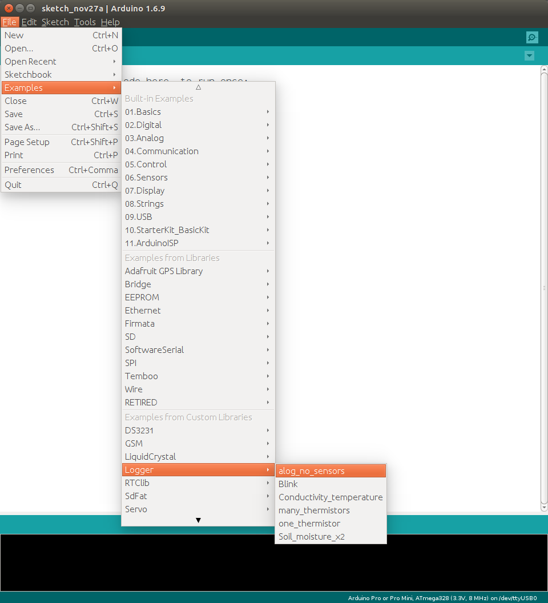
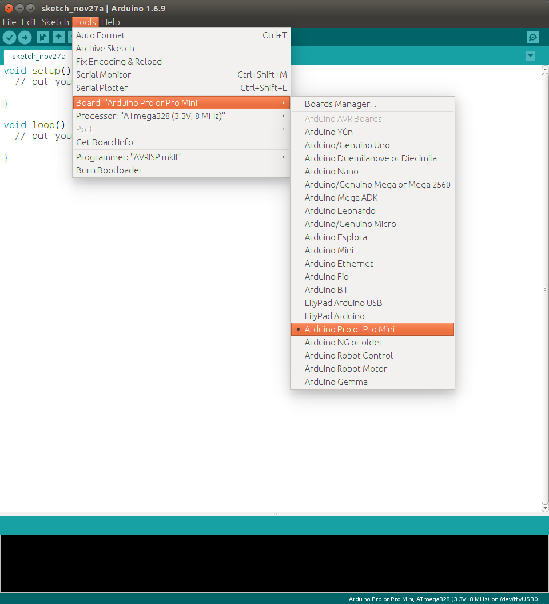
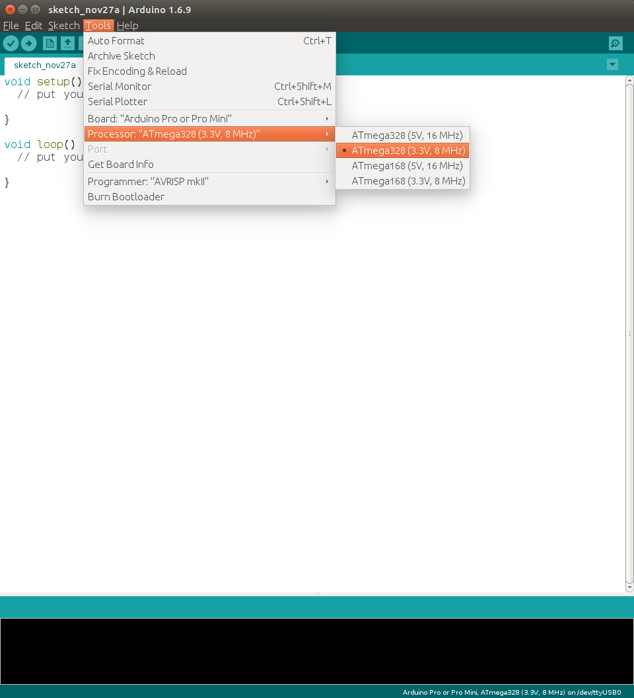
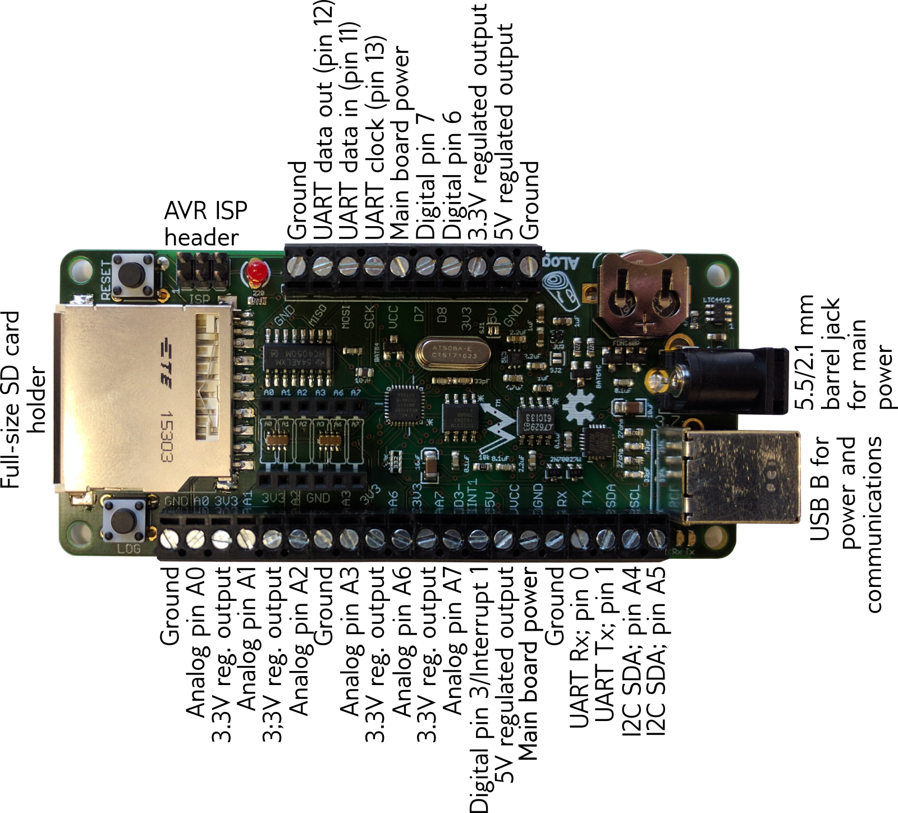

Introduction
The ALog data logger is an Arduino-based data logger that includes a full software library and documentation. The goal of this documentation is to ease the transition of researchers from closed-source proprietary technologies that are often well-documented, but can be expensive black boxes, to a fully open-source hardware and software toolchain that gives researchers all the power to control their data collection. For citizen-scientists who are interested in this tool: welcome, and it is greatly hoped that these instructions will suffice to get you started on the road to making measurements of our natural environment.
Software Installation
All of our software is available from our GitHub repository, https://github.com/NorthernWidget. To install the Arduino software and the core libraries, follow these steps:
ALog program and libraries
- Download Arduino’s latest IDE (version 1.6.9 at the time of writing): http://arduino.cc/en/Main/Software
- Navgate to your sketchbook folder in your home directory, and into the libraries folder that it contains. Clone or download the following git repositories there:
- 1. The main Logger library: https://github.com/NorthernWidget/Logger
- 2. The DS3231 clock library: https://github.com/NorthernWidget/DS3231.
- 3. SdFat library: https://github.com/greiman/SdFat
- In order to communicate with the ALog outside of the Arduino IDE (step 1) and set its clock, you will want to download ALogTalk from our GitHub repository, https://github.com/NorthernWidget/ALogTalk, along with Python if you are running Windows (Linux and Mac users have Python by default). See http://www.python.org/getit/.
Once all of these are installed, you are ready to program your ALog. Our Quick Start Guide is in the works, and will provide the next steps. Please e-mail info@.nosp@m.nort.nosp@m.hernw.nosp@m.idge.nosp@m.t.com (for the full team) or Chad Sandell (sand0.nosp@m.724@.nosp@m.umn.e.nosp@m.du) if you have questions
Arduino
Limor Fried has an excellent tutorial for Arduino at http://www.ladyada.net/learn/arduino/. If you are unfamiliar with the platform (and/or embedded electronics), I strongly suggest that you purchase and Arduino Uno (http://arduino.cc/en/Main/arduinoBoardUno), which is their basic board upon which the ALog BottleLogger is based, and run through these tutorials to get used to C/C++ programming and Arduino.
Quick-start guide
This section, our quick-start guide is meant to get you up and running with your ALog BottleLogger as efficiently as possible.
All right. You have your ALog data logger, and you’re ready to measure... something. Anything, really. But you need a hand getting out of the blocks. This section is here for you.
Installing requisite software
Go to ALog program and libraries, above, and follow the installation directions.
Upload the program "alog_no_sensors"
Now, upload some code to your data logger. We’ll start with an example that does nothing but log the time. Follow these steps:
- Start the Arduino application on your computer.
- Go to File→Examples→Logger→alog_no_sensors. Click to open it.

Open alog_no_sensors: this is our blank template upon which you can write your logger code. For now, we will just upload this file alone.
- Select "Arduino Pro" under "boards". Sparkfun’s Arduino Pro 3.3V has the same microcontroller chip and clock speed as the ALog BottleLogger, so its settings are compatible.

Sparkfun's Arduino pro can have the same settings as the ALog.
- Select the processor for the ALog: 8 MHz Arduino Pro 328.

The Arduino Pro or Pro Mini (3.3V, 8 MHz) w/ ATmega328 has the proper settings for the ALog BottleLogger. Your version of Arduino won’t have the 'ALog BottleLogger' custom setting at the top; it is part of our work to eventually have a more streamlined ALog programming interface.
- Plug in your ALog BottleLogger using a USB A to B cable.
- The BottleLogger should blink a couple of times on the LED’s that are right by the USB port. This means that it sees that it has been plugged in. Sometimes, we ship the BottleLoggers with a "blink" program installed. This will cause the large red LED in the center to blink when the ALog is plugged in... so your board might do this too. It’s one of our ways of testing that the board is programmable before shipping it to you.
- Click on the "tools" menu, like the above figure. The "Serial Port" item in that menu should no longer be grayed out. Select your serial port.
- Click "upload" from within the window holding "alog_no_sensors", and send the code to the ALog. It will compile for a little while first, and then be sent over as a bitstream while the two small LED’s by the USB port on the ALog blink furiously: these are telling you that data is being sent to the logger (RX) or transmitted from the logger to the computer (TX).
- Once this is done, click the "Serial Monitor" button to see what your data logger says. It will probably say something about setting the clock while the ALog flashes a syncopated rhythm on its main LED. This means that it is time for your next step...
Interfacing with the ALog and setting its clock
To set the clock of the ALog, plug it into your computer and run the "ALogTalk.py" program. This requires a Python interpreter (standard on all Linux and Mac computers) and can be done from the terminal by navigating to the ALogTalk directory and doing one of two things.
First, if you have a standard
FINISH THIS AFTER WORKING THROUGH CLOCK SETTING PROGRAMS! SEE IF YOU CAN GET THE HANDSHAKE TO WORK!
python ALogTalk.py
Instructions will appear on the screen; if the logger does not respond, you can push its "reset" button.
python ALogTalk.py
Instructions will appear on the screen; if the logger does not respond, you can push its "reset" button.
Creating and uploading a custom data logging routine
The Github repository has examples of data logging routines, which you can modify for your own purposes. See the "examples" folder. You can also look at "Logger.h" to see what variables you need to pass to each sensor’s function.
These examples include comments for where you should place your commands to communicate with various sensors, both analog and digital.
If you are unfamiliar with C or Arduino programming, the Arduino reference guide can help: http://arduino.cc/en/Reference/HomePage.
IMPORTANT: many examples of ALog code are included in this package; please use them as possible starting points for your code.
Attaching sensors
Use the screw terminals (labeled) to connect sensors to the logger. These screw terminals are labeled with pin numbers that correspond to the pin numbers used in the program.
Writing your own sensor code
Field deployment
We have learned a bit from past field installations, so you can e-mail us at info@.nosp@m.nort.nosp@m.hernw.nosp@m.idge.nosp@m.t.com to tell us that you want some of these examples on the website. In the meantime, it’s basically an exercise in keeping the logger away from the elements and animals that like to chew wires.
ALog pinout and peripherals

ALog pinout and peripherals.
Notes
- All pin numbers correspond to those of the Arduino Uno
- All SPI pins (11, 12, 13) are also used for SD card communication)
- VCC means "Voltage of the Common Connector"
- The 3.3V regulator is typically a precision voltage reference (part number LT1461DHS8-5#PBF) that can source 10-50 mA of power, depending on VCC: 10 mA corresponds to 0.20V dropout between VCC and 3.3V; 50 mA corresponds to 1.5V dropout. Projects that need more power and/or use fully ratiometric measurements can request an ALog without this part; solder jumpers on the board will connect 3V3 pins to the unused side of our standard 3.3V low-dropout regulator.
- The 5V regulated output is supplied via a charge pump; when no current is drawn, its voltage will increase to 5.2V; after some current draw, is output will drop to a stable 5V. If there is a concern about low voltage draw from the charge pump, users should monitor its voltage with a voltage divider connected to one of the analog channels, and include a reading during the time that the sensor or other load on the charge pump is on and active.
About
Who is Northern Widget? What is the connection to the University of Minnesota?
Northern Widget is a company that
 1.8.11
1.8.11